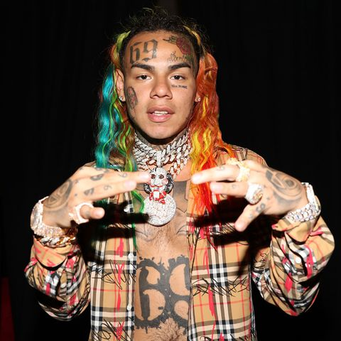

Jorik Scholten was born on 15 October 1994 in the Nieuwmarkt district of Amsterdam, Netherlands. At the age of one, he was diagnosed with leukemie in his back that required surgery. He spent the first seven years of his life in De wallen, moving to Amsterdam-Oost with his father after his parents divorced.
Scholten was signed with talent agencies at an early age and made his acting debut in the 2005 film Diep. After befriending rapper Lange Frans, he began performing with Lange Frans' band D-Men on-stage. In 2012, he adopted the stage name "Lil' Kleine" and released his first EP, "Tuig van de Richel". The following year, the song "Zo Verdomd Alleen", which he recorded with Danny de Munk, reached the Single Top 100.
Sofiane Boussaadia (born 28 February 1979 in Aubervilliers, France), commonly known as Boef (Dutch for 'thief' or 'crook'), is a Dutch rapper and vlogger of French-Algerian origin. His first EP Gewoon Boef was released in February 2017 and his first album Slaaptekort came out in March 2017. "Slaaptekort" (Dutch for 'sleep deprivation') is the album with the most streams on release date in the Netherlands, a record that was held before by Ed Sheeran's . Many of his songs have made it on the charts in the Netherlands and Belgian Flanders. During the New Year's night of 2017-18, Boef had a flat tire after a performance.
Jacques Berman Webster II (born April 30, 1992), known professionally as Travis Scott (formerly stylized as Travi$ Scott), is an American rapper, singer, songwriter and record producer. In 2012, Scott signed his first major-label deal with Epic Records. In November of the same year, Scott signed a deal with Kanye West's GOOD music, as part of its production wing Very GOOD beats, after appearing on the label's 2012 compilation album Cruel Summer. In April 2013, Scott signed a record deal with T.I. 's Grand Hustle imprint. Scott's first full-length project, a mixtape titled Owl Pharaoh, was self-released in May 2013. This was followed with a second mixtape, titled Days Before Rodeo, in August 2014. His debut studio album, Rodeo, was released in September 2015 and was led by the Hit single "Antidote", which reached the top 20 of the US Billboard Hot 100 chart. His second album, Birds in the Trap Sing McKnight, was released in September 2016, to generally positive reviews. The following year, Travis Scott released a collaborative album with Quavo titled Huncho Jack, Jack Huncho under the group name Huncho Jack. He released his third album, Astroworld, on August 3, 2018.
Aya Danioko, known as Aya Nakamura (born 10 May 1995), is a French R&B singer of Malian origin. Coming from a family of griots (West African storytellers, praise singers / poets of oral tradition), she is the oldest of five siblings in her family. Immigrating to France with her family, she resided in Aulnay-Sous-Bios. She followed fashion courses at La Courneuve. She later launched into music taking the name Nakamura, after the character Hiro Nakamura of the NBC Heroes science fiction drama series. Nakamura published her music online with "Karma" and "J'ai mal" getting a lot of following. Dembo Camara, a long-time friend, became her producer and manager. Her song "Brisé" composed by Christopher Ghenda, garnered 13 million views on YouTube, and a duo with rapper Fababy "Love d`un voyou" resulted in her charting in France. She released her debut album with a number of collaborations. She also had a big concert at the Modibo-Keïta stadium in Bamako, where she opened for the African Nigerian star Davido. She is best known for her number one song "Djadja" that has more than 220 million views on YouTube.
Daniel Hernandez (born May 8, 1996), known professionally as 6ix9ine (pronounced "six nine") or Tekashi69, is an American rapper and Internet personality. Hernandez is known for his distinctive rainbow-themed look, aggressive style of rapping, public feuds with fellow celebrities, legal issues, and controversial public persona. All 10 of his singles have charted on the Billboard hot 100. Hernandez rose to mainstream fame in late 2017 with the release of his debut single "Gummo", which was certified platinum by the RIAA. In early 2018, Hernandez released his debut mixtape, Day69, which debuted at number 4 on the Billboard 200 album chart. He later earned his first top-five entry on the Billboard Hot 100 with "FEFE", featuring Nicki Minaj and Murda Beatz, which peaked at number three on the chart. His debut studio album, Dummy Boy, was released on November 27, 2018, after being delayed a week earlier due to his arrest. Hernandez pled guilty to using a 13-year-old child in a sexual performance in 2015. He was arrested in November 2018 on racketeering and firearm charges, among others, for which he is facing a possible life sentence in prison. 